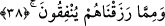

Altın tasa gelince o iyilikler ve iyi hallerdir. Sahibi bu durumu ne kadar gizlese de o
hep ortaya çıkıverir.
Şâir der ki:
Eğer hâlis miske sâhip değilsen konuşma,
Eğer varsa zaten kokusuyla o kendini belli eder.
Çöplüğe gelince işte o dünyadır.
Şâir ne güzel söyler:
Tertemiz ruhun makamı yücelerdir,
Fışkıyı yurt edinen ise ancak kurtçuk olur.
38. Yine onlar, Rablerinin dâvetine icâbet ederler ve namazı kılarlar. Onların
işleri, aralarında danışma iledir. Kendilerine verdiğimiz rızıktan da harcarlar.
“Onlar, Rablerinin” îman “dâvetine icâbet ederler ve” beş vakit “namazı”
dosdoğru “kılarlar.”
Bu âyet-i kerîme ensâr hakkında inmiştir. Allah Rasûlü (s.a.) onları îmâna dâvet etti.
Onlar da hiç tereddüd etmeden samîmî olarak gönülden bu dâvete icâbet ettiler.
“İsticâbet” lafzının mutlak olarak zikredilmesinden de anlaşılan budur. Burada şu
husûsa bir işâret vardır: Elçiye icâbet etmek, elçiyi gönderene icâbet etmek demektir.
Bu ifâde, husûsî olan bir hükmün umûmî olana atfedilmesi kabilinden olup geriye
atfedilen bu husûsî hükmün muhatablarının şereflendirilmeleri içindir. Bunun îzahı
şöyledir: Zâten icâbet etme vasfı îman bünyesinde mevcut olan bir durumdur. Peki,
öyleyse iki sıfat arasında bir farklılık olmadığı halde bu atfı yapmanın gereği başka ne
olabilir ki?
Bu âyetin ensâr hakkında inmiş olması, âyetin Medenî âyetlerden olmasını
gerektirmez. Zîrâ Ensâr’ın birçoğu, hicretten önce Mekke’de Müslüman oldular. Âyette
ayrıca “Sen O’ndan O da senden râzı olarak Rabbine dön!” (el-Fecr, 89/28)
dâvetine icâbete de işâret vardır. Bu, nefse seyr ü sülük yaptırarak hâsıl olan özel bir
icâbet durumudur.
Namazı dosdoğru kılmak da önceki vasıf gibi ensârın özelliklerindendir. Namazdan
kasdedilen beş vakit namazdır. Zîrâ onlar düzenli olarak bu vakitleri idrâk
etmektedirler. Gerçi ekvator bölgesine yakın olan Mekke ve Medine Harem-i
Şerifleri’nde, zaman zaman tecrübe ettiğimiz üzere gece gündüz vakit tesbitlerinde az
bir farklılık varsa da bu durum beş vakit namaza halel getirmez.